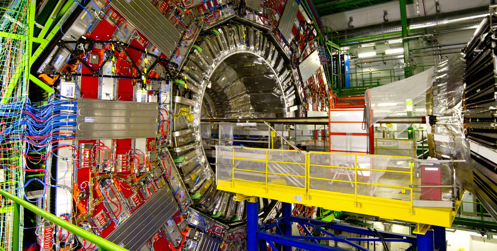
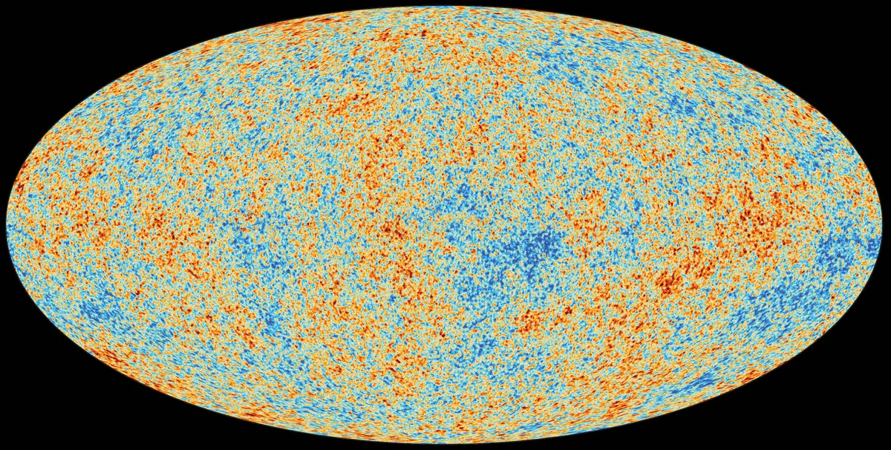
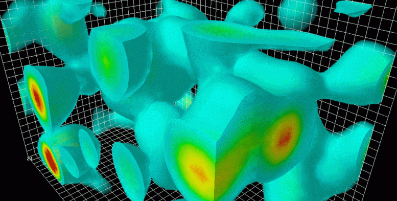
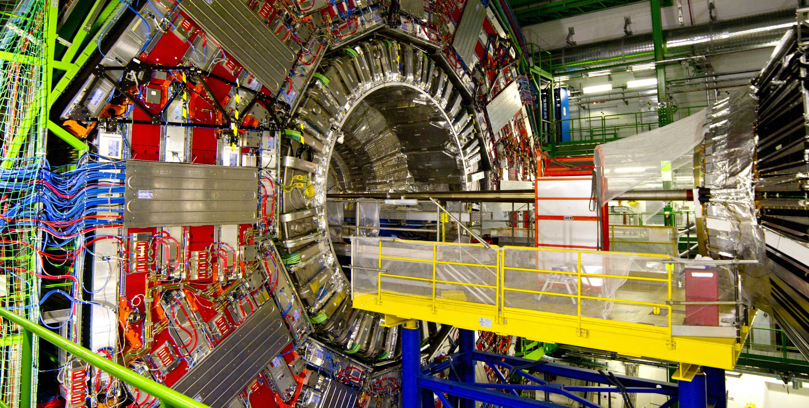
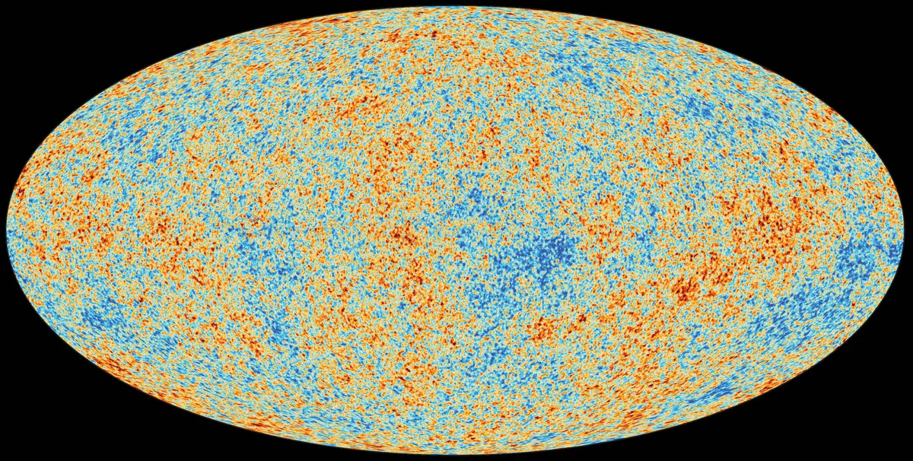
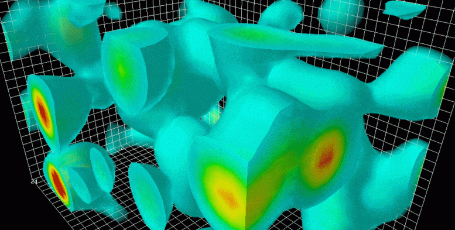

I am Dattatreya Das. I am 20 years old and I have just received my bachelor's degree in physics and I am going to do my master's this year.
I have been deeply interested in physics since I was in high school. I used to watch a lot of sci-comm videos and documentaries related to physics and math. I like physics because of the broad range of interesting stuff it encapsulates. From elementary particles to black holes, different theories and experiments, from simple statements to a wide variety of maths.
I don't get discouraged by complicated physics and maths. I believe if I put enough effort and an optimistic attitude, go through different study materials like books, notes, videos, and simulators, and give it proper time, I will be able to understand it. I also don't like to focus on memorizing laws and formulas while reading them. I like to enjoy the content of the book without focusing on the fear of forgetting it. If I forget, I can re-read the book again to recall the information. And by learning something many times from different sources, you simply get a good grasp of it so you won't forget it for a really, really long time.
Everything that exists has certain properties and behaviours which can be described, whether it follows human intuition or not. I want to know these descriptions and contribute by doing research and teaching others with similar interests to know a little bit more.
 





| Astronomy and Astrophysics | High Energy Physics | Cosmology and Relativity | Quantum Field Theory |
If you find this page really simple and short, it is because I just learned how to make a website and I have no experience in projects and internships to add.
I will add more to my website as I will study at different universities and gain experience doing projects, research, and internships.
Thanks for visiting.
- Dattatreya Das (June 23rd, 2025)
Copyright © 2025 MyWebsite. All rights reserved.